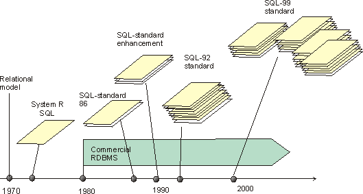

Что такое SQL?
Что такое SQL?
Язык структурированных запросов (SQL) – это язык программирования
для хранения и обработки информации в реляционной базе данных.
Инструкции SQL можно использовать для хранения, обновления, удаления, поиска и извлечения информации из базы данных.
История SQL
Эдгар Френк(Тедд) Кодд
Создал и описал концепцию реляционных баз данных и реляционную алгебру(1969-1970)
Для проектирования бд предложил аппарат нормализации отношений
История SQL
Первоначально язык SQL был разработан в исследовательской лаборатории IBM в Сан-Хосе в связи с проектом по разработке прототипа системы управления реляционными базами данных под названием System R в начале 70-х годов.
Дональд Чемберлин (Donald D. Chamberlin) и Раймонд Бойс начали работу над языком реляционных баз данных после того, как узнали о реляционной модели от Э. Кодда, встретившись с ним на симпозиуме в Нью-Йорке в 1972 году. По воспоминаниям Чемберлина, это было «откровением». Авторы были впечатлены выразительностью и компактностью реляционной алгебры и реляционного исчисления, предложенных Э. Коддом, для представления сложных запросов. Кодд использовал символическую запись с математическими обозначениями операций, но Чемберлин и Бойс захотели спроектировать язык так, чтобы им мог воспользоваться любой пользователь, даже не имеющий навыков программирования и знаний математики
Первой попыткой Чемберлина и Бойса создать язык реляционных баз данных был Square, но его было трудно использовать из-за подстрочных обозначений.
После переезда в исследовательскую лабораторию Сан-Хосе в 1973 году они начали работу над СИКВЕЛОМ.
Аббревиатура SEQUEL позже была изменена на SQL, поскольку “СИКВЕЛ” был торговой маркой британской компании Hawker Siddeley Dynamics Engineering Limited.
Аббревиатура SEQUEL расшировывалась как Structured English Query Language - "структурированный английский язык запросов"
Позже язык SEQUEL был переименован в SQL (Structured Query Language)
После тестирования SQL на тестовых площадках клиентов, чтобы определить полезность и практичность системы, IBM приступила к разработке коммерческих продуктов на основе своего прототипа System R, включая System/38, SQL/DS и DB2, которые были коммерчески доступны в 1979, 1981 и 1983 годах соответственно
В конце 1970-х годов компания Relational Software, Inc. (ныне Oracle Corporation) увидела потенциал концепций, описанных Коддом, Чемберлином и Бойсом, и разработала свою собственную RDMS на основе SQL с намерением продать ее Военно-морскому флоту США, Центральному разведывательному управлению и другим правительственным учреждениям США. В июне 1979 года компания Relational Software, Inc. представила первую коммерчески доступную реализацию SQL, Oracle V2 (версия 2) для компьютеров VAX.
SQL отличается от реляционной модели тем, что таблицы и результаты запросов не всегда соответствуют теоретической модели. SQL позволяет повторять строки и использовать порядок строк в запросах. Некоторые критики предлагают заменить SQL языком, более строго соответствующим основам реляционной модели. Однако возможно, что SQL может быть улучшен так, чтобы обеспечить уникальность, и отрасли не придется переходить на другой язык запросов. Эта дискуссия остается нерешенной.
К 1986 году группы стандартов ANSI и ISO официально приняли стандартное определение языка “Язык баз данных SQL”. Новые версии стандарта были опубликованы в 1989, 1992, 1996, 1999, 2003, 2006, 2008, 2011 и, совсем недавно, в 2016 году.
SQL-86
SQL-86, или SQL-1, был первым стандартом SQL, опубликованным в 1986 году ANSI и в 1987 году ISO. Он описывал синтаксис для базовых операций SELECT, INSERT, UPDATE и DELETE. Однако его возможности были ограничены: отсутствовали явные операторы объединения таблиц и внешние объединения, а также инструкции по изменению и отзыву данных. Тем не менее, стандарт включал возможность встраивания SQL в различные языки программирования, такие как Cobol, Fortran, Pascal и PL/1. Стандарт содержал описание синтаксиса для создания таблиц, представлений и предоставления привилегий, а также определение поддерживаемых типов данных, таких как символьные строки и числа различных форматов.
SQL-89
Следующим стандартом SQL был SQL-89, опубликованный в 1989 году. Это была незначительная редакция более раннего стандарта, надмножество SQL-86, которое заменило SQL-86. Размер стандарта не изменился. Наиболее важными новыми функциями были ограничения целостности: в дополнение к параметрам UNIQUE, NOT NULL и check в представлениях, которые уже были доступны, были добавлены первичные ключи, внешние ключи, а также ограничения ПО УМОЛЧАНИЮ и ПРОВЕРКИ. Стандарт также добавил новые языковые привязки для C и Ada.
SQL-92
SQL-92, расширившаяся до 579 страниц, ввела явный синтаксис соединений, операции set, условное выражение CASE WHEN и новые скалярные операции. Также добавила инструкции определени Функциональность работы с XML-данными значительно расширена. Появилась возможность совместно использовать в запросах SQL и XQuery.я данных, типы данных (вкл. дату и время), информационную схему, временные таблицы, уровни изоляции транзакций и динамическое выполнение запросов. Эта версия значительно повлияла на возможности реляционных баз данных. Многие базы данных адаптировали свои реализации под SQL-92, и сегодня SQL-92 использован как основа языка запросов в реляционных базах данных.
SQL-99
SQL:1999, также известный как SQL 3, был четвертой редакцией стандарта SQL. Он включал в себя пять частей, охватывающих концепции, синтаксис и операции SQL, а также методы встраивания SQL в приложения. SQL:1999 ввел важные функции, такие как общие табличные выражения и возможности OLAP для бизнес-отчетов.
SQL-2003
Стандарт SQL:2003 был опубликован 1 марта 2004 года. Его основным дополнением стали оконные функции, мощная аналитическая функция, которая позволяет вычислять сводную статистику без сворачивания строк. Оконные функции значительно увеличили выразительные возможности SQL. Они чрезвычайно полезны при подготовке всех видов бизнес-отчетов, анализе данных временных рядов и анализе тенденций. Добавление оконных функций в стандарт совпало с ростом популярности OLAP и хранилищ данных. Люди начали использовать базы данных для принятия бизнес-решений, основанных на данных.
SQL-2006
Функциональность работы с XML-данными значительно расширена. Появилась возможность совместно использовать в запросах SQL и XQuery.